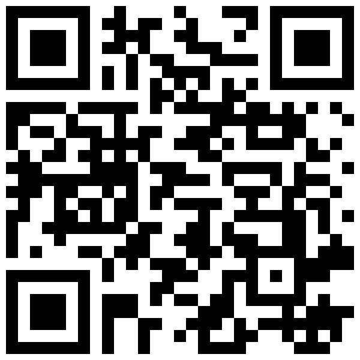

باص 101
خط العاشر من رمضان 1
📷 امسح بكاميرا الهاتف للفتح الفوري
https://sut-fleet.vercel.app/?bus=101
كود عام (لكافة الحافلات)
منظومة النقل الطلابي SUT
📷 يتيح للطالب اختيار خطه وحافلته
https://sut-fleet.vercel.app/
باص 102
خط العاشر من رمضان 2
📷 امسح بكاميرا الهاتف للفتح الفوري
https://sut-fleet.vercel.app/?bus=102
باص 103
خط الإسماعيلية الصحراوي
📷 امسح بكاميرا الهاتف للفتح الفوري
https://sut-fleet.vercel.app/?bus=103